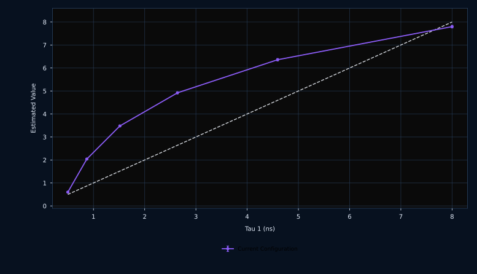

Analysis widgets and operator tools
The right-hand side of the desktop is a live analysis workspace. It is not just plotting output; each widget is tied to specific backend payloads, export routines, and workflow states.
Precision (Fisher Info)
Plain English
This is the main precision plot. It compares the ideal ceiling, the theory for the current instrument, and optional Monte Carlo validation. It tells you how easy or hard the current instrument makes lifetime estimation.
For specialists
The widget is implemented by python/gui/widgets/fisher_plot.py and consumes the output of DigitalTwinService.run_precision(). It supports multiple metrics: F, F^-2, and Fisher throughput, and it exports publication-ready SVG figures.
| Control | Purpose |
|---|---|
Log X / Log Y | Switch axis scaling without changing the underlying sweep data. |
Reset | Restore the data-driven plot range. |
Metric | Select F, F^-2, or throughput views over the same sweep. |
Smooth MC | Applies a local smoothing pass to Monte Carlo points for easier reading. |
| Series checkboxes | Enable or hide ideal, theory, MC, and individual sweep overlays. |
| Clipboard icon | Copies the current figure to the clipboard. |

Gridded MLE Accuracy
Plain English
This plot checks whether the estimator returns the right answer across the sweep. Precision tells you how noisy the estimate is. Accuracy tells you whether the estimate is centred correctly.
For specialists
The widget lives in python/gui/widgets/mle_accuracy_plot.py. It plots estimated-vs-truth relationships, optional stacked views, and MC compatibility cues derived from the configured p-value threshold.
Instrument Diagnostics
Plain English
This widget lets you inspect the timing geometry of the instrument: laser profile, reference PDF, PDF ensemble, and gate shapes.
For specialists
Implemented in python/gui/widgets/diagnostics_plot.py. It renders the active dt_excitation(), a reference dt_pdf() curve, the family of PDFs used during a sweep, and the distilled gate geometry after all anchoring, overlap, and wrap rules are applied.
Optimisation History
Plain English
This plot shows whether optimisation is moving in the right direction. It stores the whole run so you can review it after the optimiser finishes.
For specialists
The widget caches the full history payload in memory until the next run or until optimisation mode is exited. The left and right axes are reassigned by radio-button groups, which avoids losing curves after the optimiser finishes.
MC Image validation viewer
Plain English
This widget shows the simulated image products used to validate fitting behaviour across a field of view.
For specialists
python/gui/widgets/image_viewer.py presents the intensity image and fitted lifetime map generated by the backend validation-image path. Clicking a pixel drives the pixel inspector and phasor highlight.
Pixel Inspector
Plain English
This widget answers the question “what happened in this one pixel?” It compares measured counts, the fitted decay curve, the laser profile used for reconvolution, and residuals.
For specialists
python/gui/widgets/decay_plot.py renders the dense reconvolved fit from get_pixel_fit_payload(), not just discrete fitted bin counts. Tail fitting is shown only on the fitted span. Legends sit outside the plot body to avoid hiding the decay.
Phasor Space (G vs S)
Plain English
This widget turns every validation pixel into a phasor point. It helps users judge clustering, trajectory, and lifetime calibration at a glance.
For specialists
The phasor widget uses the internal HILIGHTer backend, applies calibration using the same laser profile as the decay model, and plots both the universal semicircle and the discrete single-exponential locus appropriate to the current gate scheme.
Save As
Plain English
SAVE AS writes a browsable HTML package, vector figures, and CSV data so the run can be reviewed, shared, or placed into papers and presentations.
For specialists
The exporter is python/gui/report_export.py. It writes an HTML page plus an asset folder containing SVG figures and CSV tables, including optimisation history when present. CSV tables use three header rows to preserve meaning outside the app.
Profiles manager
Plain English
The profile manager is the instrument library. It lets users save the current controller state, load existing instruments, preview their diagnostics, repair old JSON files, and apply them to the live workspace.
For specialists
Implemented by python/gui/widgets/instrument_manager.py over python/backend/profile_store.py. Repair actions persist the sanitised JSON back to disk before application.
Support widget (Ctrl+H)
Plain English
The manual is not just a file. The desktop has a floating support browser that opens this documentation site, provides search, and can jump to context-specific pages.
For specialists
python/gui/widgets/manual_viewer.py hosts a QWebEngineView plus navigation and search controls. It understands context identifiers and routes them to specific manual pages and anchors.